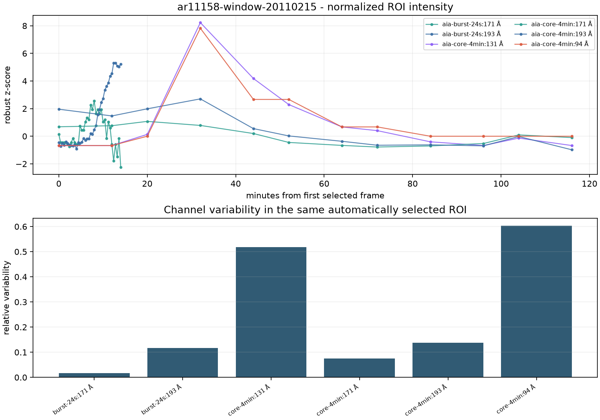

OPEN-SCIENTIST / ARCHITECTURE MOTION
LIVE TRACEAR1115805:45 STUDY
01 / SYSTEM OVERVIEWSHOT 01 / 42
A RESEARCH RUN SHOULD LEAVE A TRACE
让假设
接受证据
先看系统如何把一个科研问题组织成可追踪的闭环，再进入每一个局部阶段。
现象PHENOMENON
证据EVIDENCE
验证VALIDATION
下一轮NEXT ROUND
RUN / CHECKPOINTED / AUDITABLE
SYSTEM MAP / FIVE LAYERS
01API / SSEPOST /runs · stream · resume
02WORKFLOWruntime · context · persistence
03LANGGRAPHA / B / C / D · checkpointed State
04TOOLS / MCPFITS · solar data · search · sandbox
05STORAGE / ARTIFACTSrecords · snapshots · runs · checksums
ONE STATE OBJECT / MANY TRACEABLE HANDOFFS
INPUT / REAL OBSERVATION WINDOW

AIA 94 ÅAIA 131 ÅAIA 171 ÅAIA 193 ÅHMI
波动耗散WAVE DISSIPATION / TESTABLE
纳耀斑重联NANOFLARE RECONNECTION / CONTRAST
耦合机制COUPLED MECHANISM / SEEK COUNTEREVIDENCE
观测窗口、通道和研究问题一起进入运行；图片只是输入的一部分，不承担全部结论。
RUN ENTRY / EVENT STREAM
REQUEST / RUN CONTEXTHTTP 202
POST /api/projects/:project/runs
projectopen-scientist / ar11158bound
workflowscientificLoopWorkflow()ready
statehypotheses · evidence · tasksempty → live
run idrun-—checkpointed
SSE / EVENT STREAM
node.started01
agent.completed07
evidence.recorded32
run.completedEND
stream.resumeREADY
RUN — / CHECKPOINTED
LANGGRAPH / STATEFUL ROOT
A.generatephenomenon → hypotheses
A.verifyschema · predictions · falsification
B.runagents → evidence / tasks
BC.verifyprovenance → records
C.verifygate → status / confidence
D.routeA / B / END
CHECKPOINTED STATE / CONDITIONAL ROUTING / ROUND-AWARE
A.GENERATE → A.VERIFY / HYPOTHESIS RECORDS
H-01 / 波动耗散 × 磁场调制
—
H-02 / 纳耀斑重联 × 冷却视线
—
H-03 / 波动 × 重联耦合
—
B.DISPATCH → B.WORKER / PARALLEL EVIDENCE WORK
LOOKER观测目录与研究语境审计4 EXEC / 3 DONE
EXPLORERFITS、ROI、时间序列与图像诊断4 EXEC / 4 DONE
ORACLE反例、背景差异与替代解释4 EXEC / 4 DONE
FACT-CHECKsnapshot、processing run 与 artifact 溯源2 EXEC / 2 DONE
B.AGGREGATE / EVIDENCE LEDGER
EVIDENCE RECORDS / SHORT IDS PRESERVED
EV-7f31cross-channel correlationSUPPORT
EV-2a90periodic intensity variationSUPPORT
EV-8c11missing independent event lineageUNKNOWN
EV-4d05holdout not available in windowUNKNOWN
EV-c002contradictory signal searchNONE
EV-91afprocessing artifact checksumUNKNOWN
2SUPPORT RECORDS
30UNKNOWN RECORDS
0CONTRADICT RECORDS
EXPLORER / DETERMINISTIC PROCESSING TRACE
FITSmanifest / source window
ROIregion / alignment
TIME SERIEScadence / channels
METRICSperiod / correlation
ARTIFACTfigure / checksum

PROCESSING RUN / OUTPUT CONTRACT
input snapshotBOUND
code versionRECORDED
parametersREPLAYABLE
checksumAVAILABLE
BC.VERIFY / PROVENANCE BEFORE PROMOTION
sampleobserved window
processing runparams / version
artifactfigure / checksum
evidencehypothesis link
模型说支持 ≠ 系统接受支持。
只有当样本、处理运行、产物和假设之间的链路完整，记录才有资格进入严格门槛。
只有当样本、处理运行、产物和假设之间的链路完整，记录才有资格进入严格门槛。
C.VERIFY / STRICT SUPPORT GATE
可量化结果与区间PRESENT
支持记录 ≥ 32 / 3
独立事件与原始谱系REQUIRES ≥ 3
观测族 / 方法族REQUIRES ≥ 2 / 2
独立 holdoutMISSING
覆盖全部预测NOT COMPLETE
confidence ≥ 0.600.56
2 SUPPORT / GATE HOLD
D.PLAN / GAPS BECOME VALIDATION TASKS
NOW EXECUTABLE / COMPLETED 03
复核 AIA 通道时间序列EXECUTOR / EXPLORER · SUCCESS = METRIC
建立 ROI 处理快照EXECUTOR / FACT-CHECK · SUCCESS = CHECKSUM
搜寻反例窗口EXECUTOR / ORACLE · SUCCESS = CONTRAST
补充背景观测目录EXECUTOR / LOOKER · STATUS = PLANNED
NEEDS DATA / PLANNED 09
HMI 足点速度相关诊断FUTURE SOURCE / HMI · ROUTE = B
94→131→193→171 冷却时延FUTURE SOURCE / AIA · ROUTE = B
IRIS / EIS 光谱交叉验证EXTERNAL EXECUTOR · HOLDOUT
时间频率与联合特征STATUS = PLANNED · DISCRIMINATIVE
D.route / NEXT
RUN REPLAY / ROUND-AWARE TRACE
ROUND 1INITIAL EVIDENCE / CORRECTIONS / TASKS
19 EVIDENCE · 6 TASKS · 14 CORRECTIONS · 7 AGENTS
ROUND 2CONSUMES PREVIOUS STATE / DEDUPLICATES TASKS
13 EVIDENCE · 6 TASKS · 9 CORRECTIONS · 7 AGENTS
CORRECTION STREAM / DUPLICATES BY FINGERPRINT / ONE AGENT SKIPPED
DURABLE TRACE / PERSISTENCE AND RESUME
RUN CHUNKSSSE events
node / agent / evidence
completion signal
node / agent / evidence
completion signal
SCIENTIFIC RECORDShypotheses
evidence / corrections
validation tasks
evidence / corrections
validation tasks
CHECKPOINTrun-scoped State
LangGraph runtime
resume position
LangGraph runtime
resume position
ARTIFACTSmetrics / figures
processing runs
checksums
processing runs
checksums
GET /stream → RESUME FROM CHECKPOINT → CONTINUE THE SAME RUN
CURRENT RESULT / BOUNDED CONCLUSION
3
HYPOTHESES
32
EVIDENCE RECORDS
12
VALIDATION TASKS
2
ROUNDS
needs_dataMAX_ROUNDS_REACHED
闭环完成，当前结果只支持受限于观测窗口和处理产物的局部判断；下一轮需要补充独立事件、holdout、光谱与更完整的预测覆盖。
LOOP READY / NEXT ROUND HANDOFF
现象NEW WINDOW
证据NEW DATA
验证SAME GATE
D.routeNEXT DECISION
先看整体架构，再进入每一个局部阶段。
FOLLOW THE OBJECT / PRESERVE THE STATE / NEVER CUT TO A SLIDE
00:00 / 05:45OPEN-SCIENTIST / TOTAL → LOCAL → TOTAL1920×1080 / 30 FPS